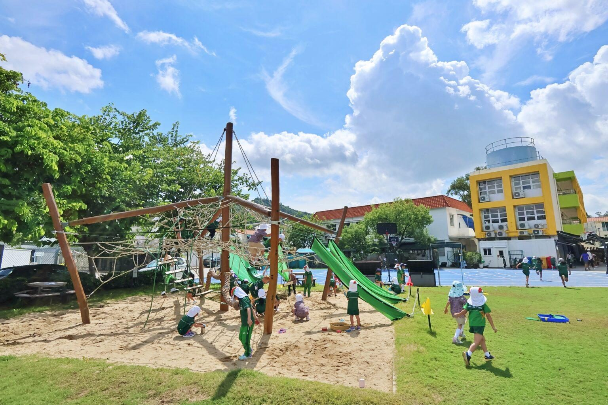
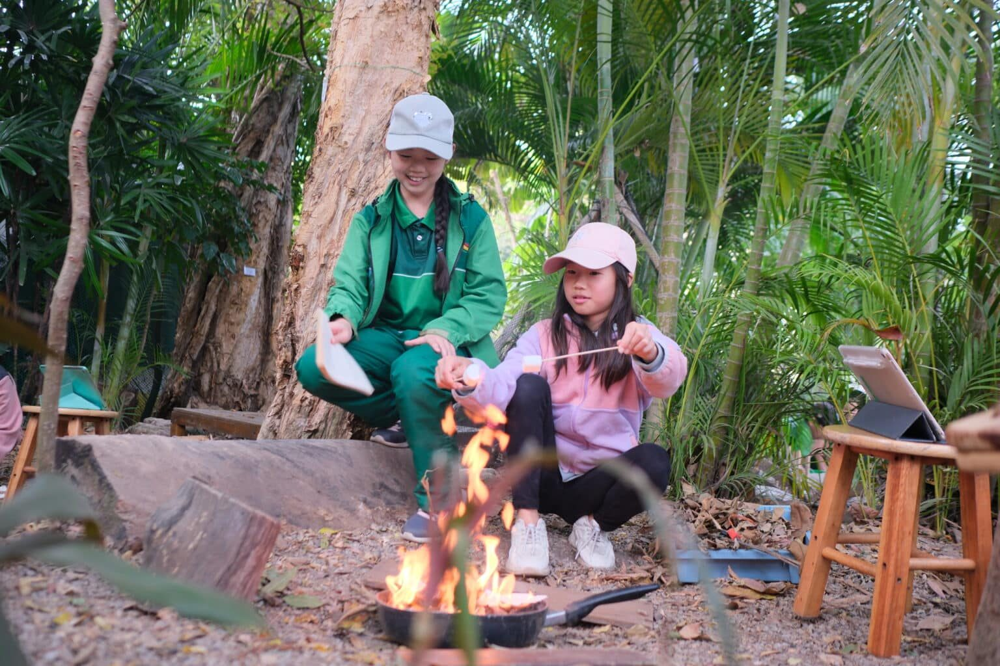
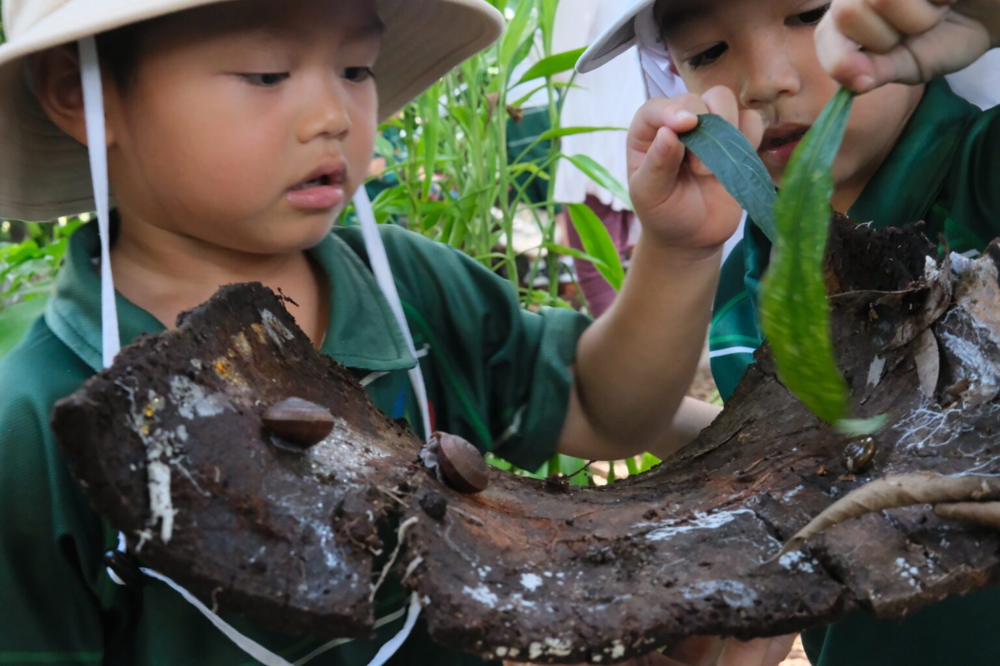
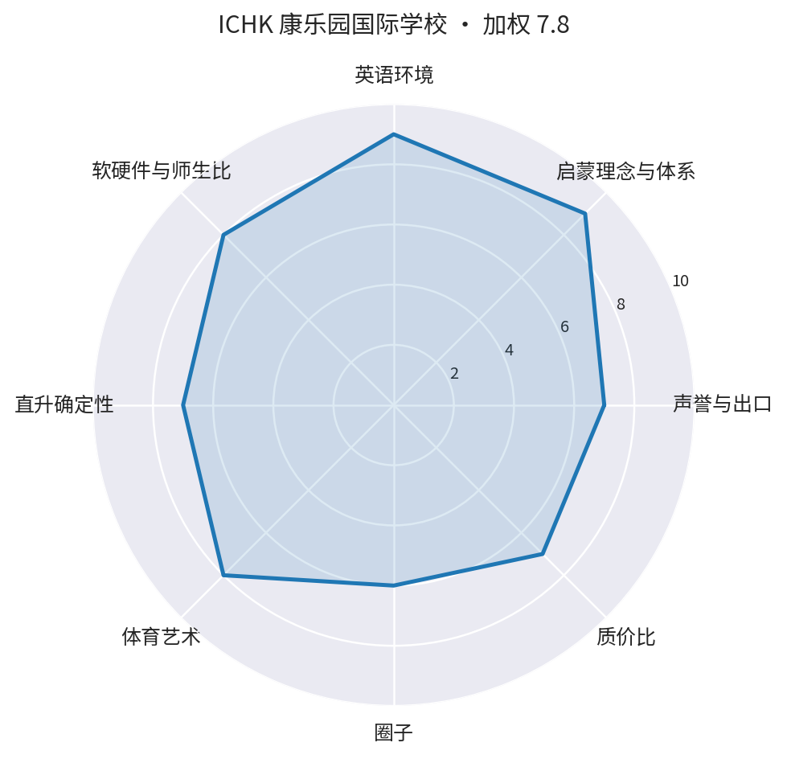

麦兜（2024.9.30 生）· 2027年9月入园全局调研 v2（第一性原则重构）｜ 数据核验截至 2026-09-05
户外教育特色校



图片来自学校官网／公开页面（2026.9 抓取，仅作择校参考，版权归校方）
| 位置 | 大埔康乐园第二十街3号（新界东动线内） |
|---|---|
| 2027 入口 | Nursery（3 岁，麦兜 2027.9 ✓；2岁8个月可先读 Pre-Nursery 下午班衔接）；全年滚动 |
| 费用 | Nursery 半日 81,070 / 全日 140,880–145,110；一次性建校费 75,000＋年建校费 20,500；申请费约 236 美元＋评估费约 102 美元 |
| 申请节点 | 全年滚动 |
| 教学/师生比 | 幼稚园独立楼栋（Nursery 两班＋Reception 两班），大型户外游戏区；IB PYP；每日普通话＋普通话助教 |
| 生源组成 | 1983 年创校、家长合办非牟利；约 400 人（2.8–11 岁）；优先：兄弟姐妹/外国护照/海外家庭/英语母语/康乐园居民 |
| 升学衔接 | K→Y6＋ICHK 中学（沙头角）Y7 优先录取，可一路到 IBDP；户外教育/森林学校全港领先（2023 国际学校大奖可持续奖、剑桥评全球创新百强） |
| 地理弹性（居住未定下的适应力） | ●●○○○ 5/10（多校区/交通可达性；不进加权总分） |
| 维度 | 分 |
|---|---|
| 声誉与出口 | 7 |
| 启蒙理念与体系 | 9 |
| 英语环境 | 9 |
| 软硬件与师生比 | 8 |
| 直升确定性 | 7 |
| 体育艺术 | 8 |
| 圈子 | 6 |
| 质价比 | 7 |
| 加权总分（理念20/英语15/直升15/声誉10/软硬件10/体艺10/圈子10/质价比10） | 7.8 |

评分备注：声誉7（创新/户外奖项多）｜体系9（PYP+森林学校）｜英语9（全英+普通话助教）｜师生比8（KG两班制；康乐园专用校园＋幼稚园独立楼栋＋大型户外游戏区——2026.9 核实上调）｜衔接7（Y7优先但中学部小）｜费用可行5（建校费推高首年）（备注文字沿用上轮六维口径，个别维度未展开体艺/圈子；以八维表格为准）
评分为研究员基于下列公开来源的综合判断，属主观加权，非官方排名；费用与招生口径以学校官网当年公告为准。